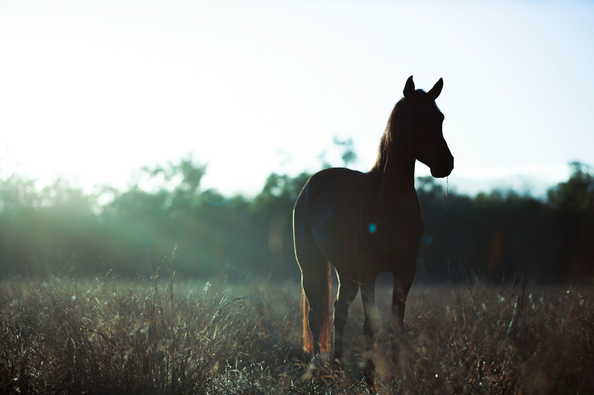
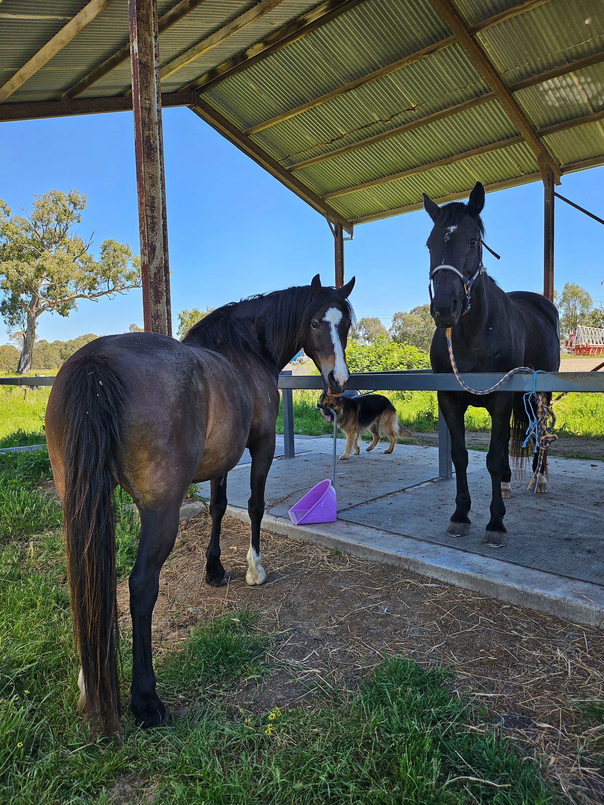
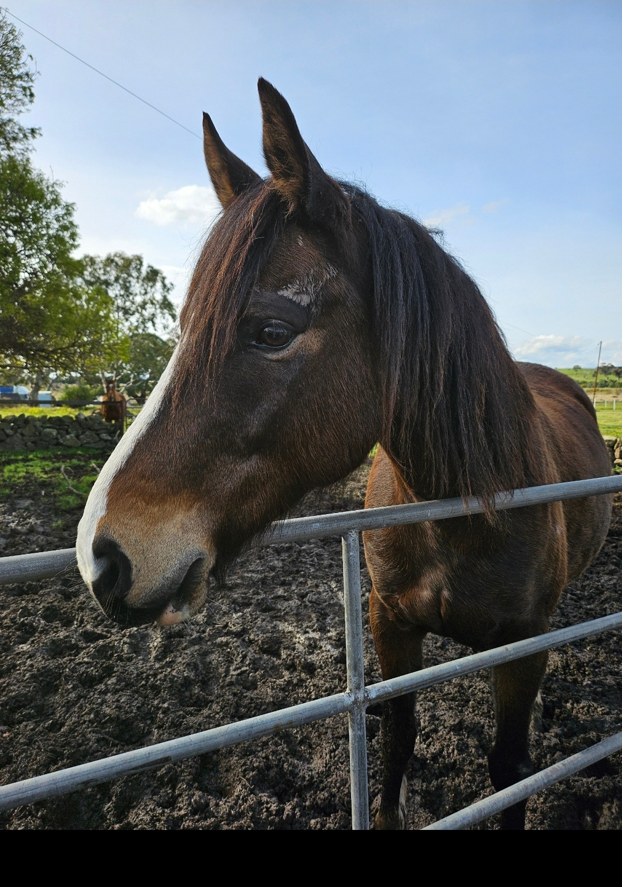
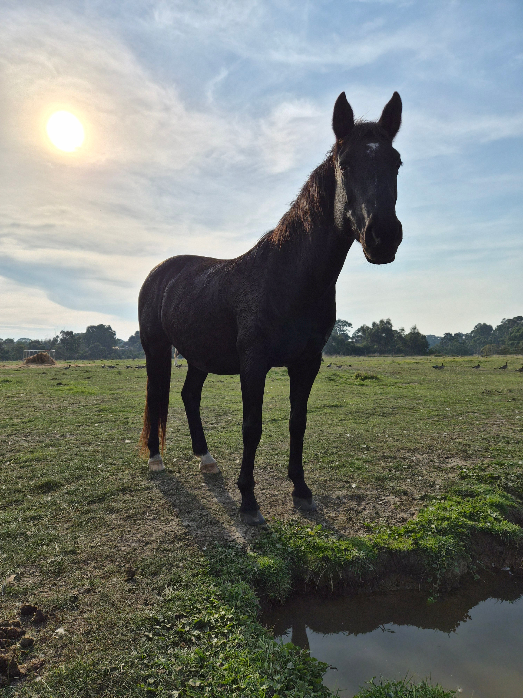

Ground. Guide. Grow.
Healing doesn't always look like a room and a couch. Sometimes it looks like open sky, the sound of hooves, and a horse that already knows how you're feeling before you do.
Book a free 15-min chatThe Practice
What is equine assisted therapy?
Horses can read the room better than most people. They sense your heart rate, your breath, your body language, and they respond to all of it — honestly and without judgment.
That feedback becomes the session. When a horse shifts away or moves closer, that's information. No performance required. No script to follow.
It's an evidence-based approach used around the world, and it works especially well for people who struggle to access or articulate what they're carrying.

Who It's For
For anyone who's feeling stuck
The ones who feel overwhelmed, shut down, or disconnected from the people around them. Anyone carrying depression, anxiety, ADHD, autism, trauma, or PTSD, whether it's been named or not. Kids who can't settle in a normal setting. Adults who've tried the usual things and kept hitting a wall.
If talking hasn't been enough, or if sitting across from a stranger in an office feels like too much, this is different. And for a lot of people who are drawn to nature and horses, it's what finally works.
Services
Three ways to get started.
01
Equine Assisted Therapy
60-minute sessions on the farm in Doreen. Walk alongside a horse, groom them, or simply be near them. No riding. Just presence, and exploration of what it brings up.
02
In-Nature Talks
Traditional talk therapy, outside. Among the bush and farmland of Doreen and Hurstbridge, with a private space available to process and relax.
03
Wellness Consulting
Not sure what kind of support fits? Sahar can help you figure that out, and refer you on if equine therapy isn't the right match right now.
The Herd
Every horse here is a rescue with their own story.
Some are grounding and steady. Some are expressive and surprising. All of them are honest.
Meet the herd →

About Sahar
Built by someone who needed it.
Over a decade in criminal justice. A psychology background. And a personal experience of witnessing what horses can do for a person in a hard place. Saddle to Soul exists because Sahar wanted to expand beyond the confines of four-walled therapy room, so she built something different.
Read Sahar's story →